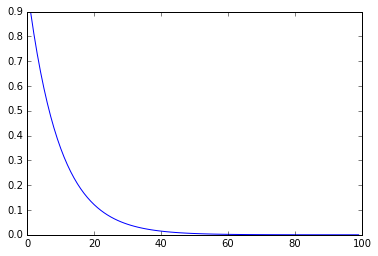
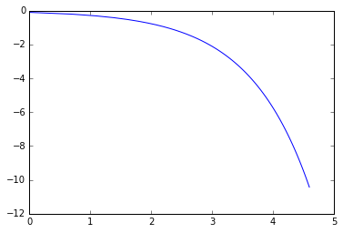
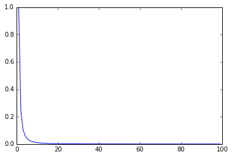
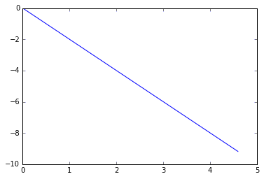

Exponential distributions and power-law distributions sometimes look quite alike, but they are in fact very different. I plotted the functions of the two distributions in Python to make this easy to see intuitively. As you can see, once the two functions are turned into log-log form (the math.log() I use here is the natural logarithm, ln), their plots are strikingly different.
In the comments I give the analytic expression behind each plot. Note also that because I approximate with a discrete set of points here, which amounts to sampling the distribution's curve, I can get a numerical mean for the power law; mathematically, a power law's mean exists only under certain conditions.
import matplotlib.pyplot as plt
import math
%matplotlib inline
# exponential distribution
# y = c ** x
x = list(range(1,100))
c = 0.9
y = [c**i for i in x]
print('mean: {}'.format(sum(y)/len(y))) # exponent has mean which equals to the exponent c
plt.plot(x,y)
plt.show()
mean: 0.09090640793950629

# log-log exponential distribution
# y_ln = ln(c) * exp(x_ln)
x_ln = [math.log(i) for i in x]
y_ln = [math.log(i) for i in y]
plt.plot(x_ln,y_ln)
plt.show()

# power-law distribution
# y = x ** c
x = list(range(1,100))
c = -2
y = [i**c for i in x]
print('mean: {}'.format(sum(y)/len(y))) # power-law has no mean
plt.plot(x,y)
plt.show()
mean: 0.016513978789746385

# log-log power-law distribution
# y_ln = c * x_ln
x_ln = [math.log(i) for i in x]
y_ln = [math.log(i) for i in y]
plt.plot(x_ln,y_ln)
plt.show()
